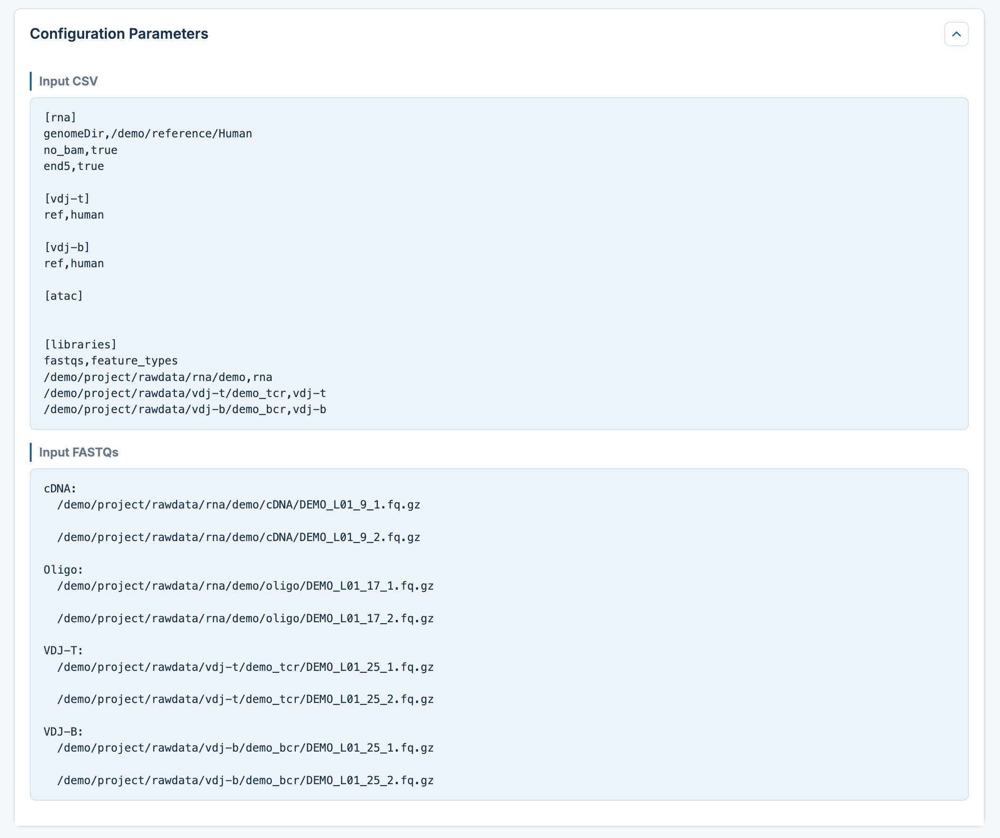
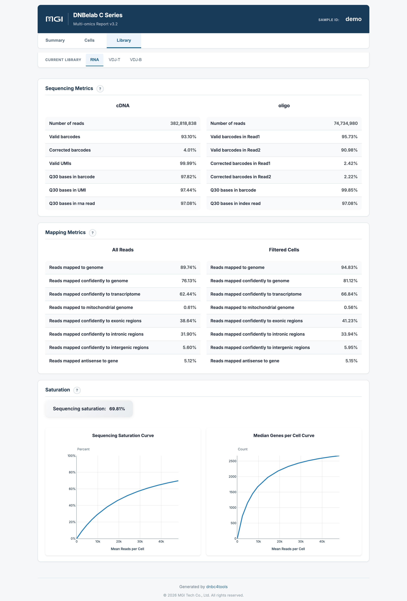
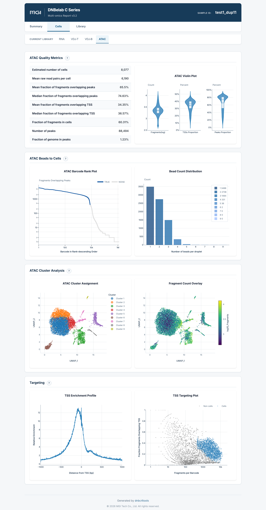
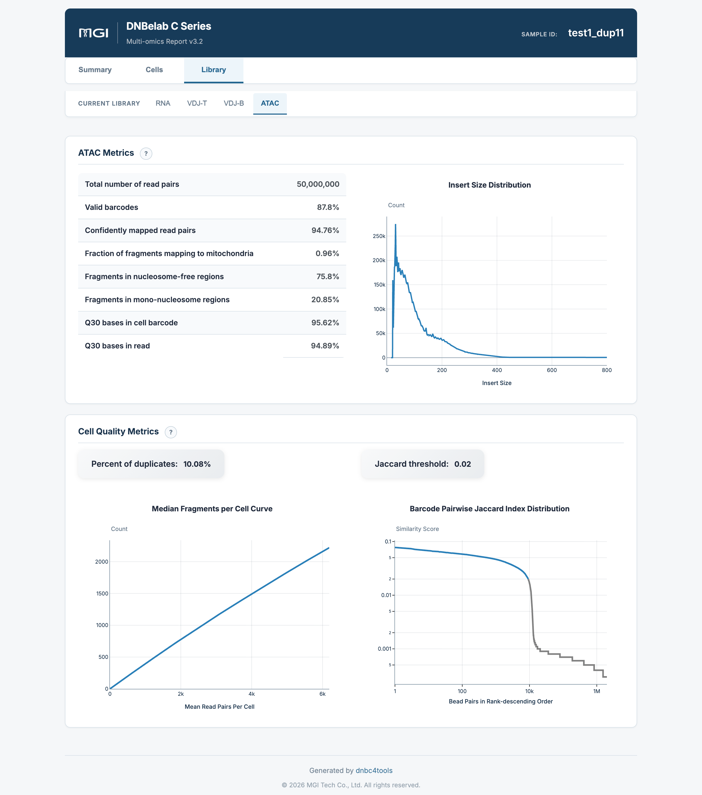
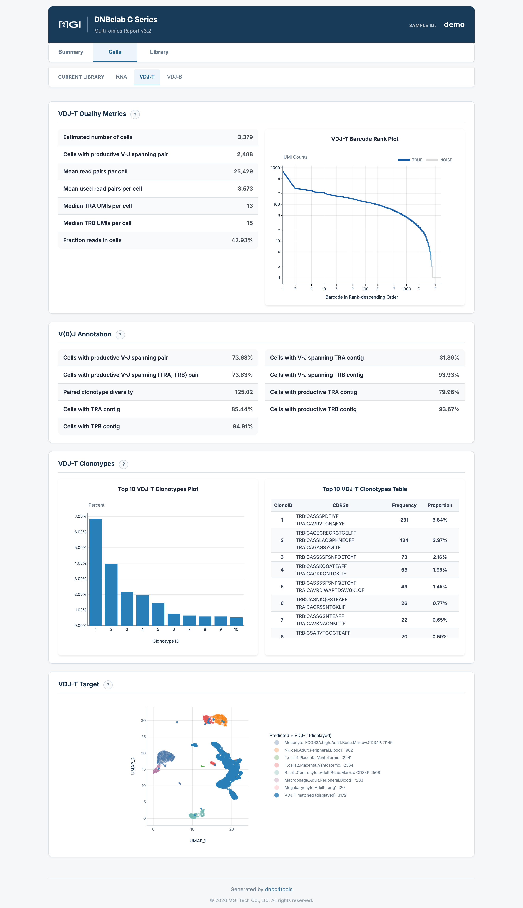
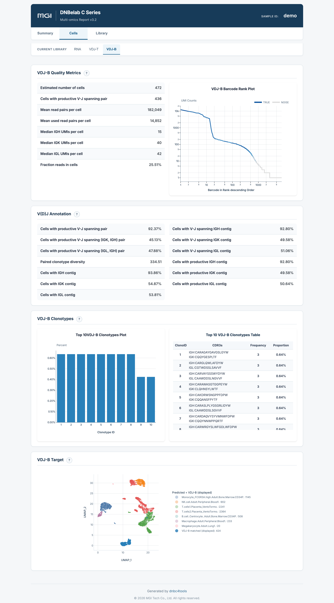
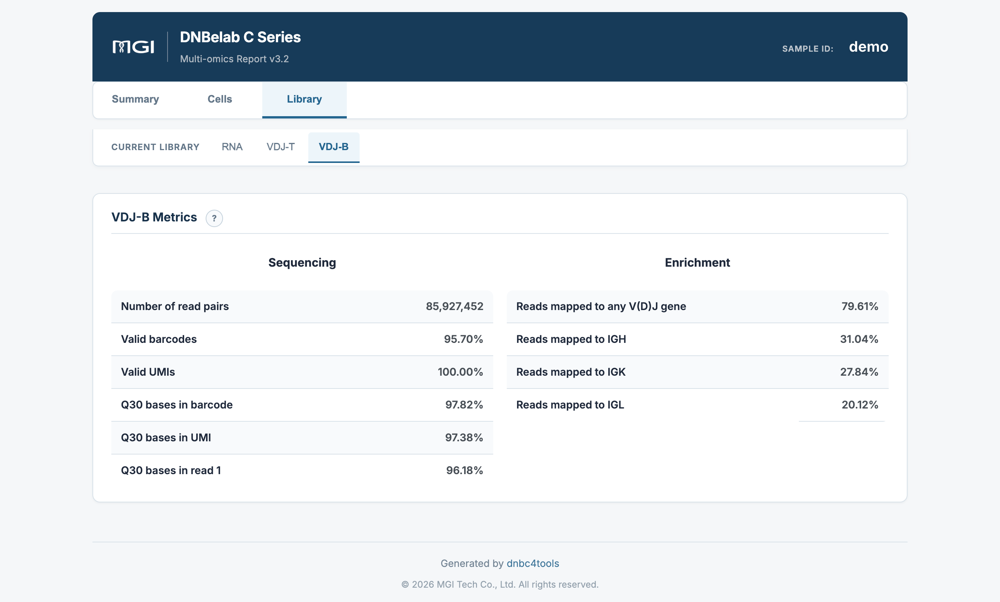

多组学分析输出¶
输出范围：目录树描述常规完成运行的结果；可选文件取决于启用模块与阶段完成状态。下文质量参考区间是判读建议，不是软件内置的通过/失败规则，应以本次配置阈值和报告状态为准。
多组学整合分析输出文件说明
概述 ¶
多组学流程通过一份配置文件调度 RNA、ATAC 和 V(D)J 分析，并按组学组织输出。组合 HTML 报告集中展示已启用组学的质控指标和分析结果。ATAC 独立分析后汇总，RNA 与 V(D)J 支持细胞关联分析；组合报告本身不执行跨组学联合降维或聚类。
核心交付物速览¶
下表汇总了多组学分析的主要交付物、文件格式、核心用途以及推荐的下游生态对接：
| 交付产物与核心文件 | 格式 | 主要用途与下游生态对接 |
|---|---|---|
| 多组学综合网页报告 • outs/<sample>_multi_report.html |
HTML |
一站式集中展示 RNA、ATAC、VDJ-T、VDJ-B 各模态的核心指标卡片、条形码排序曲线、聚类分群图、细胞注释及测序比对质量。 • 打开方式: 无需网络，双击直接在任意现代桌面浏览器中打开。 |
| 单细胞转录组产物 • outs/rna/ |
目录结构 |
完整的 scRNA 输出目录，包含过滤与未过滤表达矩阵（MEX / H5 / H5AD）、降维聚类与 Marker 差异分析（analysis/）、单细胞质控明细表（singlecell.csv）及坐标排序比对 BAM 文件（仅在 [rna] no_bam 为 false 时生成）。 |
| 染色质可及性产物 • outs/atac/ |
目录结构 |
完整的 scATAC 输出目录，包含过滤与未过滤的峰定量矩阵（MEX / H5）、高质量细胞片段文件（filtered.fragments.tsv.gz 及 Tabix 索引）、TSS 富集统计与元数据。 |
| T 细胞受体库产物 • outs/vdj-t/ |
目录结构 |
完整的 TCR 免疫组库输出，包含高置信度重叠群注释（filtered_contig_annotations.csv）、FASTA 序列、克隆型丰度统计（clonotypes.csv）及国际 AIRR 标准注释文件（airr_annotations.tsv）。 |
| B 细胞受体库产物 • outs/vdj-b/ |
目录结构 |
完整的 BCR 免疫组库输出，包含重链/轻链配对重叠群注释、共识序列（consensus.fasta）、克隆型统计及 AIRR 标准格式文件。 |
| 流水线运行清单 • logs/run_manifest.json |
JSON |
记录各模态的执行耗时与完成状态（success、success_existing 缓存复用或 failed），便于自动化生产运维与审计溯源。 |
输出目录结构 ¶
运行完成后，结果统一归档在 <outdir>/<sample>/outs/ 目录下：
<outdir>/<sample>/
├── outs/
│ ├── <sample>_multi_report.html # 多组学综合交互式网页报告
│ ├── rna/ # RNA 模块完整输出目录 (若启用)
│ │ ├── filtered_feature_bc_matrix/ # 过滤后的高置信度表达矩阵 (MEX)
│ │ ├── filtered_feature_bc_matrix.h5 # 表达矩阵 (HDF5 格式)
│ │ ├── filtered_feature_bc_matrix.h5ad # 表达矩阵 (AnnData 格式)
│ │ ├── singlecell.csv # 单细胞质控元数据表
│ │ ├── metrics_summary.xls # RNA 实验质控指标汇总表
│ │ └── analysis/ # 聚类降维与 Marker 基因结果
│ ├── atac/ # ATAC 模块完整输出目录 (若启用)
│ │ ├── filtered.fragments.tsv.gz # 高质量细胞片段文件及索引
│ │ ├── filtered_peak_bc_matrix/ # 过滤后的峰定量矩阵 (MEX)
│ │ ├── filtered_peak_bc_matrix.h5 # 峰定量矩阵 (HDF5 格式)
│ │ ├── peak_annotation.tsv # 峰注释（可选）
│ │ ├── singlecell.csv # ATAC 细胞级质控元数据表
│ │ └── metrics_summary.xls # ATAC 实验指标汇总表
│ ├── vdj-t/ # VDJ-T 模块完整输出目录 (若启用)
│ │ ├── filtered_contig_annotations.csv # 过滤后高质量重叠群注释表
│ │ ├── clonotypes.csv # TCR 克隆型统计分析表
│ │ ├── airr_annotations.tsv # 国际 AIRR 标准注释文件
│ │ └── metrics_summary.xls # VDJ-T 实验指标汇总表
│ └── vdj-b/ # VDJ-B 模块完整输出目录 (若启用)
│ ├── filtered_contig_annotations.csv # 过滤后高质量重叠群注释表
│ ├── clonotypes.csv # BCR 克隆型统计分析表
│ ├── airr_annotations.tsv # 国际 AIRR 标准注释文件
│ └── metrics_summary.xls # VDJ-B 实验指标汇总表
└── logs/
└── run_manifest.json # 各模态执行状态清单与审计日志
详细文件说明 ¶
1. 多组学组合报告 (outs/<sample>_multi_report.html)¶
- 内容：整合呈现 RNA、ATAC、VDJ-T、VDJ-B 各模态的核心指标卡片、条形码排序曲线、聚类分群图、细胞注释及测序比对质量。
- 用途：单文件离线网页，可在同一个界面内完成跨模态实验质量排查、指标互验与生物学发现。
2. 各单组学独立输出子目录 (outs/rna, outs/atac, outs/vdj-t, outs/vdj-b)¶
- 内容与规范：每个启用的组学均拥有独立的标准化输出子目录，其文件构成、命名与数据格式与独立单组学完全等价（如转录组的 MEX/H5/H5AD、ATAC 的 fragments 与 peak 矩阵、VDJ 的 AIRR 注释表等）。
- 跨组学联合分析：在多组学实验中，同一细胞的跨模态条形码具备严格的对应与对齐关系，方便直接载入 Seurat（WNN 多模态整合分析）、Signac 或 Muon 进行多组学联合聚类与基因调控网络推断。
- 单组学详细文档链接：
- scRNA 分析输出说明
- scATAC 分析输出说明
- scVDJ 分析输出说明
3. 运行清单审计日志 (logs/run_manifest.json)¶
记录每个组学模态的执行耗时与完成状态：
* success：全新分析运行顺利完成；
* success_existing：命中流程缓存，复用前序断点结果（断点续跑）；
* failed：该模态执行发生异常，记录失败节点便于快速定位排查。
[!NOTE] 提示：C6 多样本输出结果 基于 Sample Barcode 物理标记混合的 C6 多样本单细胞 RNA 分析输出结果与目录结构已独立成章，详情请参阅 C6 多样本分析输出说明。
网页报告释义 ¶
概述：多组学综合交互报告采用现代两级导航架构，解耦全局总览与各模态的单细胞质控及物理文库指标。
多组学质量评估原则与阅读建议
- 全景总览先行：在报告首页的
Summary页面（Assay overview）核对各启用的组学核心卡片（细胞数、中位 UMI/片段数、VDJ 生产性配对数），确认所有模态均正常检出有效细胞。 - 单模态逐层质控：依次切换上方一级导航栏中的各个组学选项卡（
RNA、ATAC、VDJ-T、VDJ-B），结合左侧的Cells（细胞层）与Library（文库层）核对各模态的基础测序保真度、条形码识别率与特征富集度。 - 跨模态生物学一致性互验：将 RNA 的基因表达谱聚类、ATAC 的染色质开放模式以及 V(D)J 的克隆扩增表型进行交叉比对，确认不同模态间细胞分群的生物学合理性。
两级导航体系架构¶
多组学交互报告通过顶部与左侧的两级导航栏实现清晰的内容解耦：
- 顶部组学导航栏（一级选项卡）：动态展示本次运行中启用的组学模态，包含
RNA、VDJ-T、VDJ-B及ATAC； - 左侧功能导航栏（二级选项卡）：
Summary：当前组学的核心概览指标卡片、多模态全景汇总及流程运行参数；Cells：单细胞层面的质控指标表、小提琴图、条形码排序曲线、降维聚类图、细胞注释及 Marker 基因；Library：物理测序文库质量（Q30、有效条形码/UMI）、基因组比对构成及测序饱和度分析。
1. Summary 与参数配置 (Summary & Parameters)¶
Summary 页面 (Assay overview)¶
Summary 页面提供本次运行全部启用模态的核心概览指标卡片：
- Assay overview 核心卡片：
- RNA 概览：展示
Estimated number of cells（估计细胞数）、Median UMIs per cell（中位 UMI 数）及Median genes per cell（中位基因数）； - VDJ-T 概览：展示
Estimated number of cells、Cells with productive V-J spanning pair（具有功能性配对的细胞数）及主要链检出数； - VDJ-B 概览：展示
Estimated number of cells及重轻链生产性配对统计； - ATAC 概览（若启用）：展示
Estimated number of cells、Median fragments per cell（中位片段数）及Fraction of fragments in cells。 - 核心价值：单屏集中呈现所有组学的细胞回收与信号强度基准，快速识别不同组学间细胞捕获数量的平衡度。
参数配置 (Configuration Parameters)¶
点击报告顶部的参数信息按钮可展开本次运行的完整配置清单：

- 输入配置清单 (Input CSV)：完整记录输入配置表的内容，包括各组学独立参数块（
[rna]、[atac]、[vdj-t]、[vdj-b]）及参考基因组路径； - 测序文库配置 (
[libraries])：清晰记录各文库的原始 FASTQ 文件路径与feature_types对应关系，为后续分析复现与实验审计提供完整凭证。
2. RNA 页面 (RNA Modality)¶
RNA > Cells（单细胞质控与生物学分群）¶
展示单细胞转录组维度的细胞质控、无监督聚类及差异 Marker 基因：

- RNA Quality Metrics：展示细胞数、
Fraction reads in cells（细胞内转录组读段比例，衡量信噪比）、中位基因/UMI 数及平均测序深度； - RNA Beads to Cells：
- RNA Barcode Rank Plot（左图）：双对数坐标系下的条形码排序曲线，呈现清晰的真实细胞拐点（Knee Point）与背景分界；
- Bead Count Distribution（右图）：微流控反应中单个细胞液滴合并的微珠条形码分布；
- RNA Cluster Analysis：
- 左图（RNA Cluster Assignment）：基于表达谱的二维 UMAP 聚类图，展现不同细胞亚群的拓扑分离；
- 右图（UMI Count Overlay）：在相同 UMAP 空间投射 UMI 分子计数渐变，辅助排查测序深度偏倚；
- RNA Cell Annotation：基于参考数据库自动预测并标记的主要细胞类型；
- Top Features by Cluster：交互式特征 Marker 基因表，包含每个聚类簇的代表性基因、校正后 P 值（
p_val_adj）、表达变化倍数（avg_log2FC）及簇内外表达比例（pct.1/pct.2）。
RNA > Library（测序质量、比对与饱和度）¶
展示 RNA 转录组文库的物理测序保真度与全基因组比对表现：

- Sequencing Metrics：输入读段总数、有效条形码率（
Valid cell barcodes）、有效 UMI 率（Valid UMIs）及条形码/UMI/转录本读段的 Q30 质量比例； - Mapping Metrics：提供 All Reads 与 Filtered Cells 两种视角，展示基因组比对率、转录组比对率、线粒体比例及外显子/内含子/基因间区分布；
- Saturation：
- Sequencing Saturation Curve：测序饱和度随每细胞平均 cDNA reads 的渐进曲线；
- Median Genes per Cell Curve：中位基因检出数随测序深度的渐近饱和曲线。
3. ATAC 页面 (ATAC Modality)¶
ATAC > Cells（染色质开放性细胞质控与聚类）¶
展示单细胞 ATAC 维度的细胞开放信号、TSS 富集与降维聚类：

- ATAC Quality Metrics：估计细胞数、中位片段数（
Median fragments per cell）、峰内片段重叠比例（Fraction overlapping peaks / FRIP）及 TSS 区域片段重叠比例； - ATAC Beads to Cells：ATAC 片段条形码排序曲线与微珠合并分布；
- ATAC Cluster Analysis：
- 左图（ATAC Cluster Assignment）：基于潜变量语义分析（LSI）降维与 UMAP 聚类，呈现表观基因组亚群结构；
- 右图（Fragment Count Overlay）：在 UMAP 坐标中投射每个细胞的片段深度；
- Targeting：
- TSS Enrichment Profile：转录起始位点附近（±1,000 bp）转座酶切割信号的归一化富集曲线，中心高耸尖峰直接反映信噪比；
- TSS Targeting Plot：单细胞总片段数与 TSS 富集分数的双变量散点图，直观展现高质量细胞与背景液滴的分水岭。
ATAC > Library（片段长度周期性与测序指标）¶
展示 ATAC 转座文库的物理特征与染色质天然构象：

- ATAC Metrics：原始读段对数、有效条形码率、基因组比对率、线粒体比例及无核小体/单核小体区域片段占比；
- Insert Size Distribution：插入片段长度频率分布曲线，展现由无核小体区域（< 147 bp）与约 200 bp 单核小体构成的经典梯状周期峰，验证细胞核结构的天然完整性；
- Cell Quality Metrics：测序饱和度分析曲线与微珠 Jaccard 相似度阈值判定分布。
4. VDJ 页面 (VDJ Modality - TCR & BCR)¶
多组学流程对 TCR（VDJ-T）与 BCR（VDJ-B）进行独立解耦展示，全面呈现细胞免疫受体库特征：
VDJ-T / VDJ-B > Cells（受体全长配对与优势克隆型）¶


- VDJ Quality Metrics：
- 估计细胞数：表达目标受体转录本的高置信度真实细胞数；
- 生产性配对细胞数与比例：具有功能性全长配对（TRA/TRB 或 IGH/轻链）的细胞绝对数及在总细胞中的占比（推荐 ≥ 40%）；
- 平均读段数：每个细胞平均分配的 VDJ 测序读段数。
- VDJ Barcode Rank Plot：各细胞条形码按生产性 UMI 降序排列的累计分布曲线。在 BCR 数据集中，常可观察到极高 UMI 计数的浆细胞特异性尖峰。
- V(D)J Annotation：特异性链（TRA/TRB 或 IGH/IGK/IGL）的检出比例与 V-J 跨区配对统计。
- VDJ Clonotypes：
- Top 10 Clonotypes Plot：前 10 大优势克隆型的细胞频率柱状图，直观展现克隆扩增程度；
- Top 10 Clonotypes Table：包含克隆型 ID、各链 CDR3 氨基酸与核苷酸序列、绝对细胞频数及相对占比。
- VDJ Target：将鉴定的 TCR/BCR 生产性受体细胞投影至单细胞转录组的 UMAP 空间，直观呈现克隆扩增亚群与功能转录状态的对应关联。
VDJ-T / VDJ-B > Library（靶向富集效率与测序质量）¶
展示免疫受体靶向富集文库的物理测序指标：

- Sequencing：测序读段对总数、有效条形码比例、有效 UMI 比例以及条形码/UMI/Read1 的 Q30 碱基质量；
- Enrichment：
- Reads mapped to any V(D)J gene：成功比对至已知胚系 V(D)J 基因片段的读段占比（推荐 ≥ 50%）；
- 链特异性映射率：分别统计比对至各个特定链（如 TCR 的 TRA/TRB，BCR 的 IGH/IGK/IGL）的读段比例，评估各链间靶向捕获的平衡度。